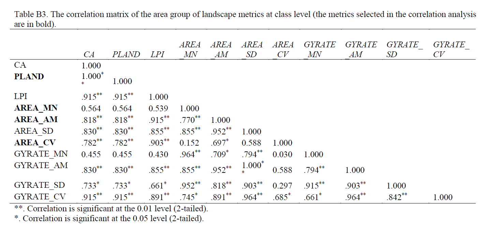

Aichi Target 11: By 2020, at least 17 percent of terrestrial areas and inland water, and 10 percent of coastal and marine areas, are conserved through networks of protected areas and other effective area-based conservation measures.
Do provincial parks have an impact on landscape change, especially on the urbanization process?
Step 1. Quantified spatial patterns surrounding provincial parks with 11 landscape metrics (My main task). The selection of these metrics was based on their description, correlation analysis, and principal component analysis (PCA).
Step 2. Analyzed landscape changes over time.
Step 3. Used random points for comparing their landscape structures to those in the neighborhood of provincial parks.
Step 4. Identified the changes in urban and built-up areas and analyze their association with provincial parks.